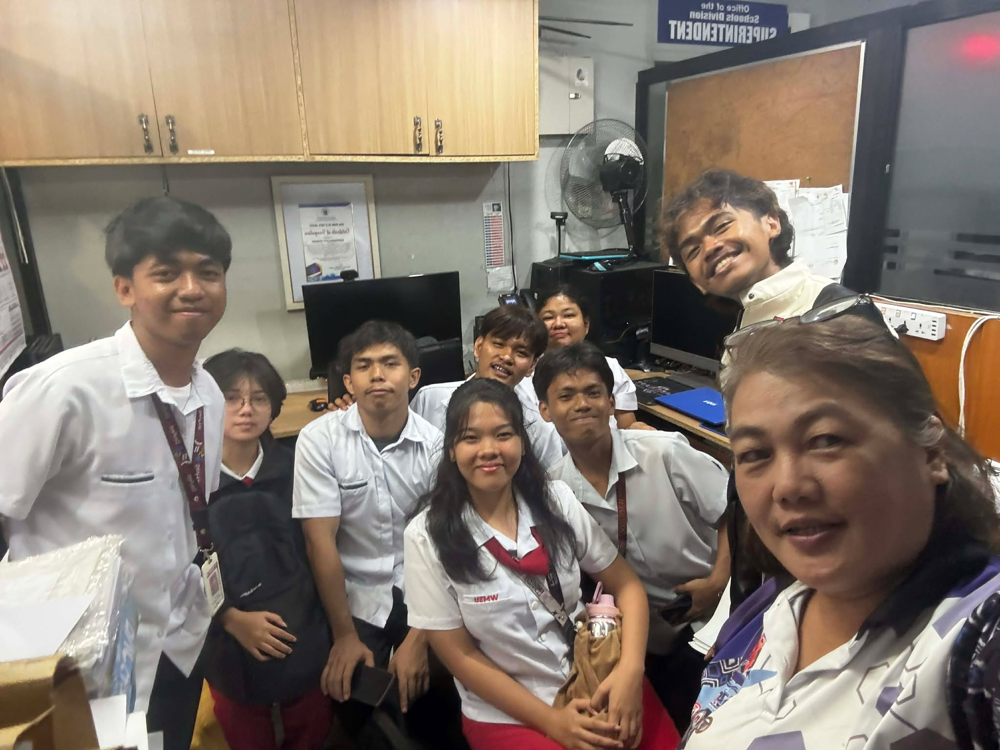
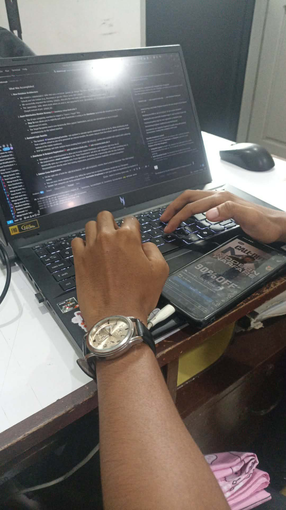
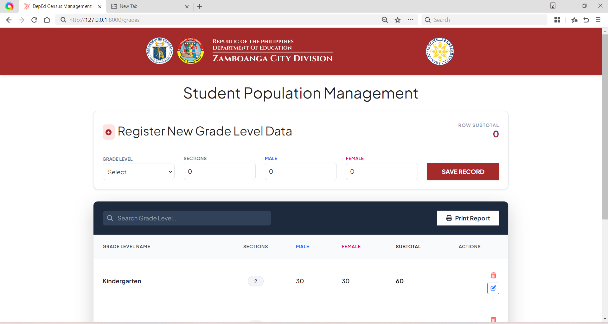
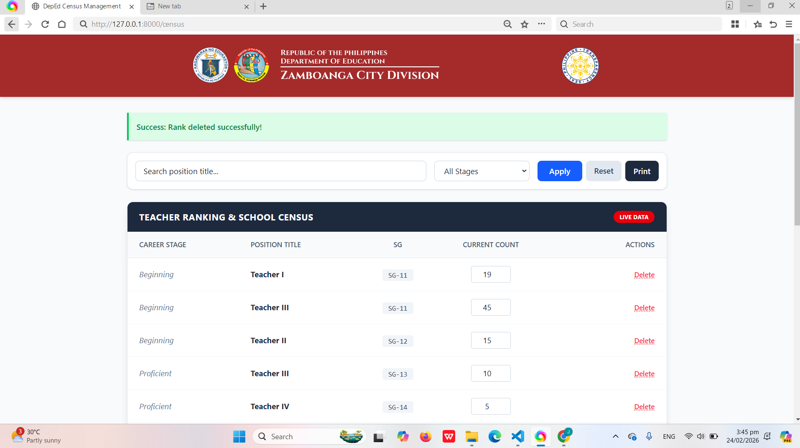

Week 1: Foundational UI & DB Architecture
Internship @ DepEd Zamboanga City (Planning & Research)
Activities & Assignments
Contributed to the foundational UI/UX design and database architecture for the DepEd Zamboanga City web-based system. Principal responsibility was the end-to-end development of the Teacher Ranking Module, leading the back-end implementation and designing the core database schema.
Accomplishments
- Transitioned wireframes to a functional dashboard with PostgreSQL integration
- Optimized Edit/Delete functions, improving efficiency by 30%.
- Engineered smart search and "print-ready" official configurations.
Challenges Encountered
Laravel installation hurdles and GitHub version conflicts due to mismatched PHP versions. Standardized setups using a single PHP version manager to resolve.




Swipe or scroll to view progress photos
Skills Applied
Laravel, PostgreSQL, Database Design, PHP, UI/UX Design.